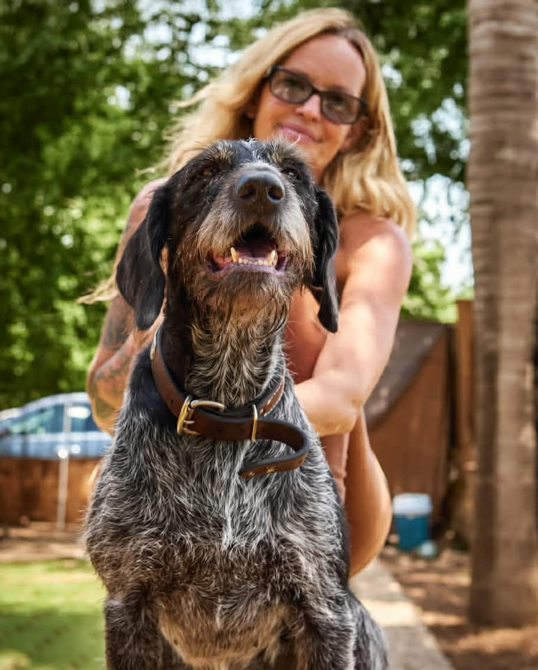
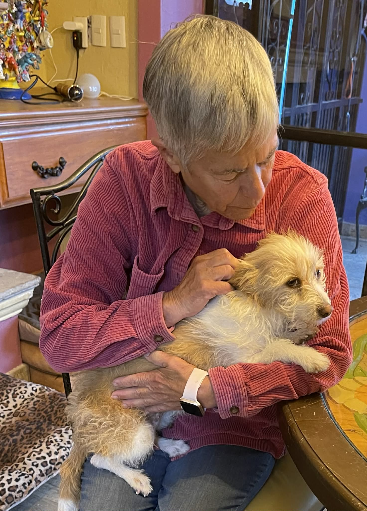

About Tail End Sanctuary

How Tail End began
Jena Marie Olio, professional dog trainer and passionate advocate for dogs and dog rescue, said “yes” to Ringo in 2022. Ringo, a sick older dog, was orphaned when his owner died unexpectedly. Jena, with a heart for older dogs, lovingly cared for Ringo in her home for two years until his death.
She had no financial support for him, or for the several other old dogs she took in over the next few years. In that time, Tail End Sanctuary began to take shape as a separate casita on Jena's property — a place for pet owners who plan ahead for their dogs to be cared for when they no longer can. And a member of the Ajijic community began to personally sponsor old, sick street dogs who had nowhere else to go.
One dog led to another
In our community, the Lake Chapala area of Mexico, people keep identifying older stray dogs living on the street on their own — dogs who are unwanted, no longer young, and often struggling just to get through each day.
They are easy to overlook but impossible to forget once you truly see them.
What started as concern turned into action. Tail End is evolving from a home caring for old dogs to a home based sanctuary devoted to care beyond traditional rescue. The focus is on the quality of each dog's remaining time. For these old street dogs, it is the first time they experience consistent kindness. The first time somebody notices they are in pain. The first time someone stays.
What began as a small home caring for 15 dogs is growing to make room for more of these old souls who wander the streets of our community.
We measure success in peaceful days.
Three people, one promise
Brought together by a shared concern for senior dogs.

Jena Marie Olio
Over 20 years in dog rescue and training, Jena runs a sanctuary for dogs whose owners have passed away. She has long been dedicated to caring for senior dogs in their final stage of life.

Ronni Coppola
A lifelong dog lover who has rescued and fostered some of the most vulnerable dogs in the community. Her compassion and hands-on care make a daily difference in the lives of our dogs.
Juanita Crampton
Founder of the Tail End Planning program, helping pet owners prepare for their animals' future care. Her work led to a deeper focus on senior stray dogs and the creation of the sanctuary.